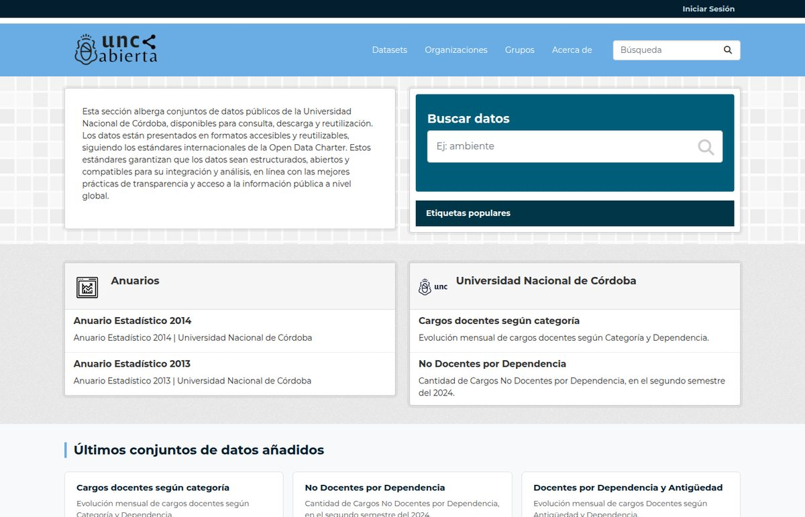
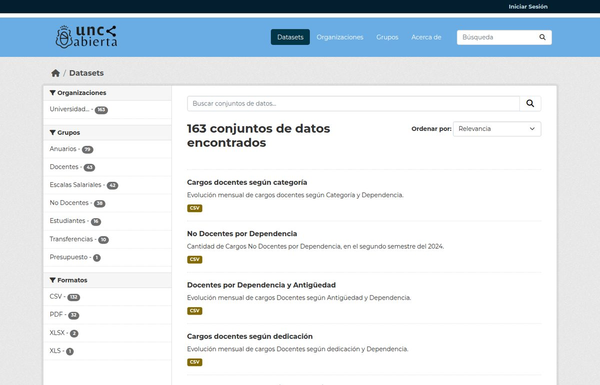

Un portal de datos abiertos para la Universidad Nacional de Córdoba
La Universidad Nacional de Córdoba tiene portal de datos abiertos: datosabiertos.unc.edu.ar. Lo hicimos desde cero sobre CKAN 2.11 y es de los trabajos que más disfruté en los últimos años, así que va un poco de detalle.

De dónde viene
La idea de un CKAN para universidades la venimos planeando desde 2019 con el equipo de la UNC. De aquella época quedaron en GitHub un cosechador para los sistemas SIU (los que usan casi todas las universidades públicas argentinas), una librería para sacar datos de ahí y otra para conectarse a la API de SIGEVA de CONICET. Eran experimentos. El portal de verdad arrancó a fines de 2024, cuando se redefinió mejor como extraer datos y publicar.
De donde vienen los datos?
La UNC hizo un gran trabajo sobre Apache Superset, que es la herramienta de visualización de datos que usan para sus tableros internos. La idea fue conectar CKAN con Superset y publicar como datasets lo que ya estaba en los tableros. Para eso hicimos la extensión ckanext-superset. No había otra extensión que hiciera esto asi que la dejamos abiertas para poder ser reutilizada por otros.
Qué quedó publicado
Todo lo que no es específico de la UNC vive en la organización UnCKAN en GitHub, pensando en que otra universidad pueda reutilizarlo:
- ckanext-superset: conecta CKAN con Apache Superset para publicar como datasets lo que ya está en los tableros de la universidad.
- ckanext-dbquery: consultas a la base desde el propio CKAN, para los administradores y solo para casos especiales. En muchos casos los administradores de CKAN no tienen acceso a la base de datos y esta extensión permite hacer consultas SQL desde la interfaz web.
- ckanext-push-errors: cuando algo se rompe en producción, el error llega a Slack antes de que alguien lo reporte.
- ckan-env: el entorno Docker completo para levantar el portal en cualquier máquina. Esto es solo para entorno de desarrollo local. Hay un repositorio privado con la configuración de producción que gestiona el equipo de la UNC.
- ckanext-citeproc: hicimos un fork de esta extensión y la adaptamos para que funcione en nuestro caso. Esta extensión permite citar datasets en formato APA, Chicago y MLA.

Otras universidades
Todo esto fue hecho pensando que otras universidades puedan reutilizarlo. La idea es que cada universidad pueda tener su propio portal de datos abiertos, con su identidad y sus datasets, pero usando la misma base común. Solo sería necesario que cada universidad conecte una instancia de Apache Superset con sus propios datos (usalmente de los sistemas SIU) y haga una extension de interfaz gráfica adaptada a su caso. El resto es común y puede ser reutilizado tal cual.